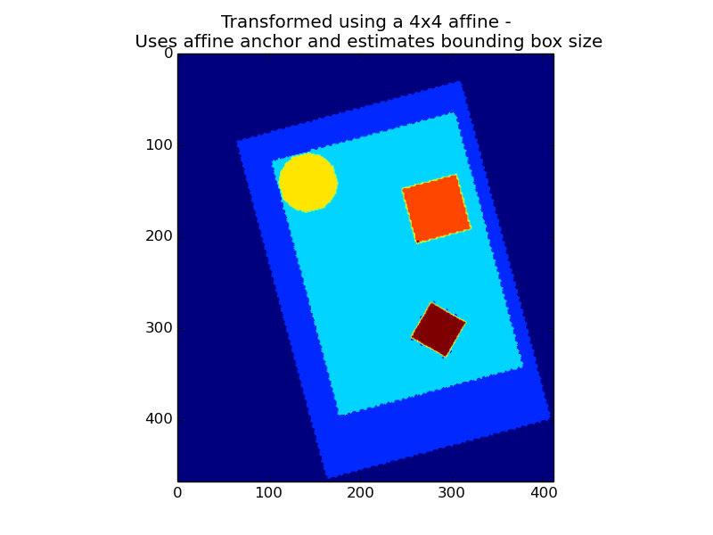
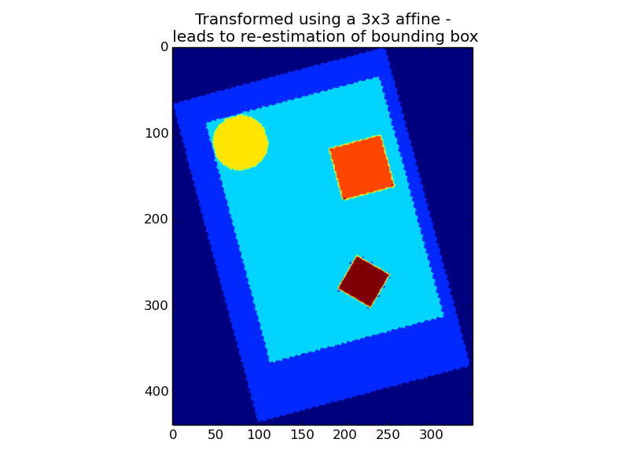
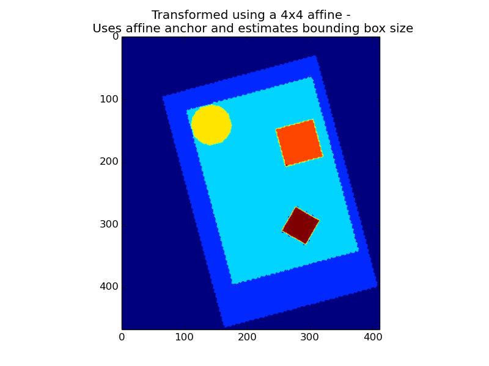
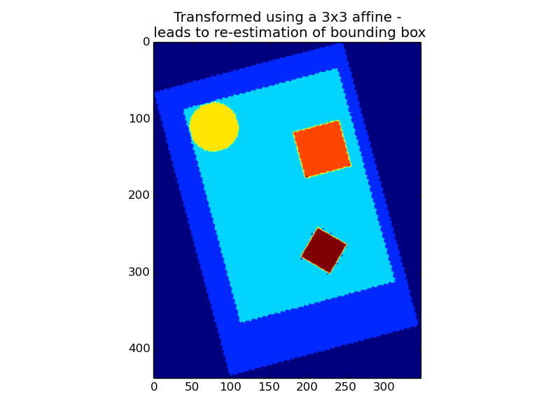

Contents
File names as arguments
For most functions or objects, it is not necessary to explicitely load the data. Indeed, most of nilearn functions can take file names as arguments:
>>> from nilearn import image
>>> smoothed_img = image.smooth_img('/home/user/t_map001.nii')
Nilearn can operate on either filenames, or NiftiImage objects, which are in-memory representation of the nifti files. We often use as a shorthand the term ‘niimg’ to denote either a filename or a NiftiImage object. In the example above, the function smooth_img returns a NiftiImage object, which can then be readily passed to any other nilearn function that accept niimg arguments.
In any analysis, the first step is to load the data. Often, for statistical analysis, it is convenient to apply some basic transformations and to turn the data in a 2D (samples x features) matrix, where the samples could be different time points, and the features different voxels or different ROIs.
 →
→ 
“masker” objects (found in modules nilearn.input_data) are there to make these operations easy.
The philosophy underlying these classes is similar to scikit-learn‘s transformers. Objects are initialized with some parameters proper to the transformation (unrelated to the data), then the fit() method should be called, possibly specifying some data-related information (such as number of images to process), to perform some initial computation (e.g. fitting a mask based on the data). Then transform() can be called, with the data as argument, to perform some computation on data themselves (e.g. extracting timeseries from images).
Note that the masker objects may not cover all the image transformations for specific tasks. Users who want to make some specific processing may have to call low-level functions (see e.g. nilearn.signal, nilearn.masking.)
This section describes how to use the NiftiMasker class in more details than the previous description. NiftiMasker is a powerful tool to load images and extract voxel signals in the area defined by the mask. It is designed to apply some basic preprocessing steps by default with commonly used default parameters. But it is very important to look at your data to see the effects of the preprocessings and validate them.
In addition, NiftiMasker is a scikit-learn compliant transformer so that you can directly plug it into a scikit-learn pipeline.
Sometimes, some custom preprocessing of data is necessary. For instance we can restrict a dataset to the first 100 frames. Below, we load a resting-state dataset with fetch_fetch_nyu_rest(), restrict it to 100 frames and build a brand new Nifti-like object to give it to the masker. Though it is possible, there is no need to save your data in a file to pass it to a NiftiMasker. Simply use nibabel to create a Niimg in memory:
nyu_dataset = datasets.fetch_nyu_rest(n_subjects=1)
nyu_filename = nyu_dataset.func[0]
nyu_img = nibabel.load(nyu_filename)
# Restrict nyu to 100 frames to speed up computation
from nilearn.image import index_img
nyu_img = index_img(nyu_img, slice(0, 100))
In the basic tutorial, we showed how the masker could compute a mask automatically, and it has done a good job. But, on some datasets, the default algorithm performs poorly. This is why it is very important to always look at how your data look like.
Note
The full example described in this section can be found here: plot_mask_computation.py. This one can be relevant too: plot_nifti_simple.py.
If a mask is not given, NiftiMasker will try to compute one. It is very important to take a look at the generated mask, to see if it is suitable for your data and adjust parameters if it is not. See the NiftiMasker documentation for a complete list of mask computation parameters.
As an example, we will now try to build a mask based on a dataset from scratch. The Haxby dataset will be used since it provides a mask that we can use as a reference.
The first step is to generate a mask with default parameters and take a look at it.
# We need to specify an 'epi' mask_strategy, as this is raw EPI data
masker = NiftiMasker(mask_strategy='epi')
masker.fit(nyu_img)
plot_roi(masker.mask_img_, nyu_mean_img, title='EPI automatic mask')
We can make the outline of the mask more by increasing the number of opening steps (opening=10) using the mask_args argument of the NiftiMasker.
masker = NiftiMasker(mask_strategy='epi', mask_args=dict(opening=10))
masker.fit(nyu_img)
plot_roi(masker.mask_img_, nyu_mean_img, title='EPI Mask with strong opening')
Looking at the nilearn.masking.compute_epi_mask called by the NiftiMasker object, we see two interesting parameters: lower_cutoff and upper_cutoff. These set the grey-values bounds in which the masking algorithm is going to try to find it’s threshold (where 0 is the minimum of the image, and 1 the maximum). Here we raise a lot the lower cutoff, and thus force the masking algorithm to select only voxels that are very light on the EPI image.
masker = NiftiMasker(mask_strategy='epi',
mask_args=dict(upper_cutoff=.9, lower_cutoff=.8,
opening=False))
masker.fit(nyu_img)
plot_roi(masker.mask_img_, nyu_mean_img, title='EPI Mask: high lower_cutoff')
See also
If you don’t want to use the NiftiMasker to perform these simple operations on data, note that they are corresponding functions.
Resampling can be used for example to reduce processing time by lowering image resolution. Certain image viewers also require images to be resampled to display overlays.
Automatic computation of offset and bounding box can be performed by specifying a 3x3 matrix instead of the 4x4 affine, in which case nilearn computes automatically the translation part of the affine.
 



Special case: resampling to a given voxel size
Specifying a 3x3 matrix that is diagonal as a target_affine fixes the voxel size. For instance to resample to 3x3x3 mm voxels:
>>> import numpy as np
>>> target_affine = np.diag((3, 3, 3))
See also
If smoothing the data prior to converting to voxel signals is required, it can be performed by NiftiMasker. It is achieved by passing the full-width half maximum (in millimeter) along each axis in the parameter smoothing_fwhm. For an isotropic filtering, passing a scalar is also possible. The underlying function handles properly the tricky case of non-cubic voxels, by scaling the given widths appropriately.
See also
All previous filters operate on images, before conversion to voxel signals. NiftiMasker can also process voxel signals. Here are the possibilities:
Exercise
You can, more as a training than as an exercise, try to play with the parameters in Simple example of decoding: the Haxby data. Try to enable detrending and run the script: does it have a big impact on the result?
See also
Once voxel signals have been processed, the result can be visualized as images after unmasking (turning voxel signals into a series of images, using the same mask as for masking). This step is present in almost all the examples provided in nilearn. Below is an excerpt of the example performing Anova-SVM on the Haxby data):
coef = svc.coef_
# reverse feature selection
coef = feature_selection.inverse_transform(coef)
# reverse masking
weight_img = nifti_masker.inverse_transform(coef)
The purpose of NiftiLabelsMasker and NiftiMapsMasker is to compute signals from regions containing many voxels. They make it easy to get these signals once you have an atlas or a parcellation.
Nilearn understands two different ways of defining regions, which are called labels and maps, handled respectively by NiftiLabelsMasker and NiftiMapsMasker.
Note
These usage are illustrated in Extracting times series to build a functional connectome
This atlas defines its regions using maps. The path to the corresponding file is given in the “maps_img” argument. Extracting region signals for several subjects can be performed like this:
One important thing that happens transparently during the execution of NiftiMasker.fit_transform is resampling. Initially, the images and the atlas do not have the same shape nor the same affine. Getting them to the same format is required for the signals extraction to work. The keyword argument resampling_target specifies which format everything should be resampled to. See the reference documentation for NiftiMapsMasker for every possible option.
Usage of NiftiLabelsMasker is similar to that of NiftiMapsMasker. The main difference is that it requires a labels image instead of a set of maps as input.
The background_label keyword of NiftiLabelsMasker deserves some explanation. The voxels that correspond to the brain or a region of interest in an fMRI image do not fill the entire image. Consequently, in the labels image, there must be a label corresponding to “outside” the brain, for which no signal should be extracted. By default, this label is set to zero in nilearn, and is referred to as “background”. Should some non-zero value occur, it is possible to change the background value with the background_label keyword.